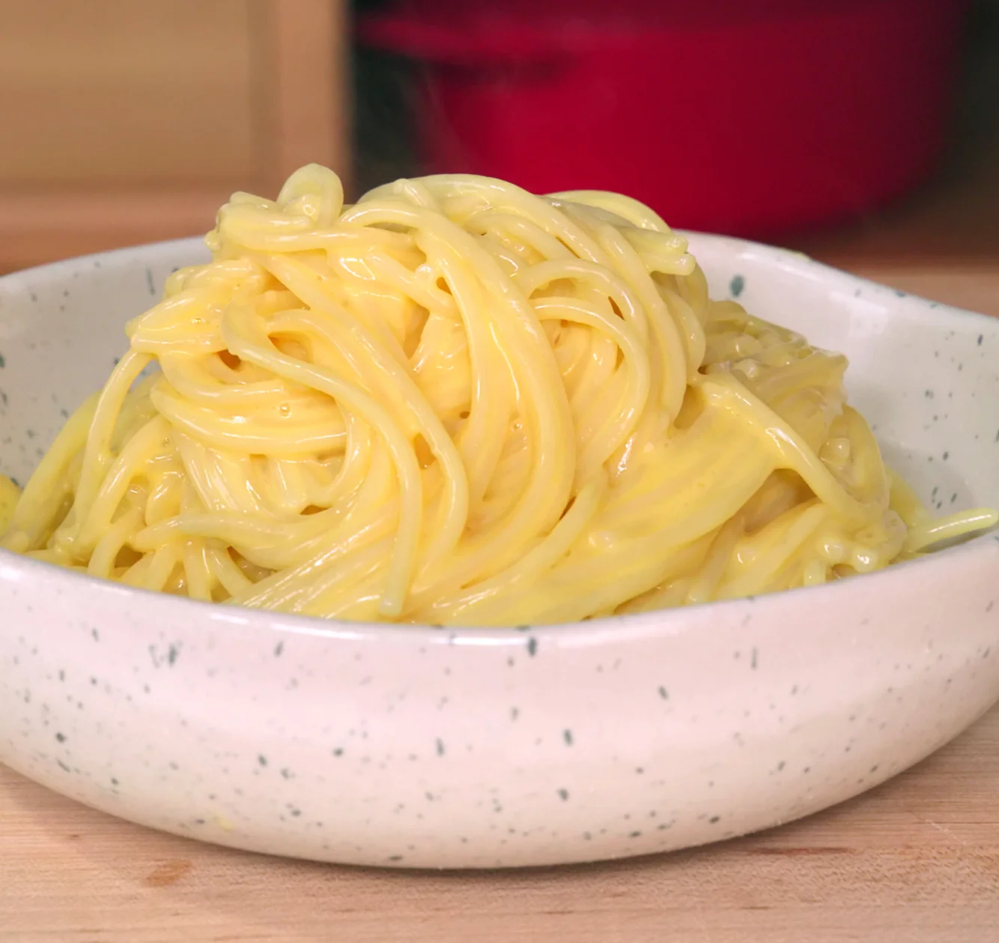

Buttered Noodles

The cheapest, most luxurious noodles of all time
I used to make this for myself all the time as a grad student.
If you're someone who doesn't cook because you find cooking intimidating, this recipe might be for you.
And like all my other recipes, this recipe won't cost you much either.
Ingredients
- 1 cup (224g) unsalted butter, cubed
- 1 lb (453g) spaghetti
- Salt to taste
- Freshly ground black pepper, to taste optional
- Flaky salt, to taste optional
Steps
- Place bucatini in a large pot of boiling water that has been seasoned generously with salt.
Cook according to package instructions or until cooked al dente, about 7 minutes. Do not drain the pasta.
- While noodles are boiling, to a large saucepan over medium-low heat add half your butter.
Once butter is slightly melted, cut off the heat and wait for your pasta to finish boiling.
- Using tongs transfer your cooked pasta directly from the pot of water into your melted butter saucepan.
Don’t worry about pasta water getting into the pan as it helps to emulsify the sauce.
Add your remaining butter and begin constantly tossing the pasta while adding a tablespoon of pasta water at a time
until your sauce is fully emulsified and slightly thickened. Ideally you want it clinging to the pasta nicely.
- Season to taste with salt, toss again to coat evenly, and serve. Optionally, add flakey salt and freshly cracked pepper.
Be cautious when using flaky salt as it could over salt your dish if it’s already salty enough.
Home